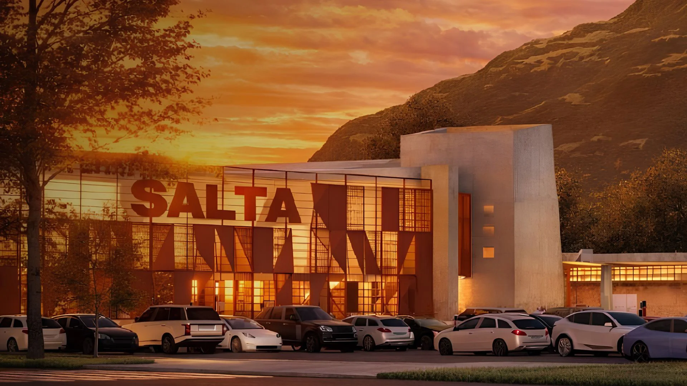
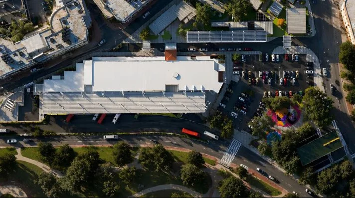

Boleterías
Ventas de V1 y El Cardón, de 05:30 a 23:00. Todos los medios de pago.
ADENTRO DE LA TERMINAL
Tocá cada punto del plano para saber qué hay en ese sector: andenes, boleterías, baños, informes, locales y estacionamiento. También podés recorrerlo con la tecla Tab.
Hacé clic (o usá Tab + Enter) sobre cualquier círculo para ver acá la información de ese sector.
SERVICIOS PARA EL PASAJERO
Pensado para que la espera sea simple: ubicá cada servicio antes de venir.
Ventas de V1 y El Cardón, de 05:30 a 23:00. Todos los medios de pago.
De 06:00 a 22:00. Información turística y objetos perdidos.
En ambos extremos del hall. Baño accesible y cambiador.
120 asientos, USB, wifi gratis y pantallas con salidas.
Cafetería, kiosco 24 h, farmacia y regionales salteños.
80 cocheras techadas y dársena de 15 minutos gratis.
Rampas, piso guía, ascensor a andenes y anuncios sonoros.
Lockers por hora o por día, junto a la oficina de informes.
Parada oficial sobre Av. Yrigoyen, con fila ordenada y señalizada.
EL FUTURO YA TIENE RENDER
La renovación integral de la terminal fue noticia y se volvió viral en redes: más de 2.500 m² pensados para vivir las 24 horas. Este sitio es su capa digital: el plano, el código de color, las alertas y el buscador ya están pensados para el edificio que viene. Los renders son conceptos generados con IA sobre el predio real, y así se declaran.


Los puntos del proyecto, y cómo este sitio ya los acompaña:
Bancos, cajeros, farmacia, librería, gastronomía y productos regionales.
Espacios de trabajo, gimnasio y consultorios dentro de la terminal.
Parque temático gratuito para niños: la espera deja de ser un trámite.
Sector gastronómico con pedido desde el auto, activo las 24 horas.
Sector exclusivo para envíos y retiro de paquetes.
Energía solar, iluminación LED y climatización eficiente — el mismo criterio de este sitio: liviano y sin descargas innecesarias.
Vuelve el estacionamiento gratuito breve: ya figura en nuestro plano interactivo.
Una zona más segura, tecnológica y viva a toda hora, como muestra la pizarra en tiempo real.
La propuesta de Samson Digital: si la terminal física se renueva, su presencia digital no puede quedarse atrás. Este sitio —buscador de viajes, alertas en tiempo real, plano interactivo y accesibilidad— es el portal que la terminal renovada va a necesitar el día que abra sus puertas. En una frase: la renovación física necesita esta renovación digital.
DUDAS COMUNES
Acordeón interactivo: tocá una pregunta para ver la respuesta.
Para los servicios urbanos (C1 y C2) alcanza con estar en el andén al horario de salida. Para V1 y el Expreso El Cardón recomendamos llegar 15 minutos antes: el preembarque cierra 5 minutos antes de la salida.
C1 y C2 se pagan con tarjeta SUBE arriba del vehículo. V1 y El Cardón se compran en boletería o en la web, con efectivo, tarjetas o billeteras virtuales.
Sí: rampas en todos los accesos, ascensor a andenes, piso guía para personas con baja visión, baños adaptados, asientos prioritarios y anuncios por altavoz y pantalla. Las unidades de El Cardón llevan espacio para silla de ruedas.
En servicios urbanos, con transportadora. En El Cardón, hasta 8 kg en transportadora y con turno previo en boletería (viajan en cabina, junto a su humano).
Acercate a la Oficina de informes (hall central, 06:00 a 22:00) o escribinos desde la página de Contacto indicando servicio, día y horario del viaje.